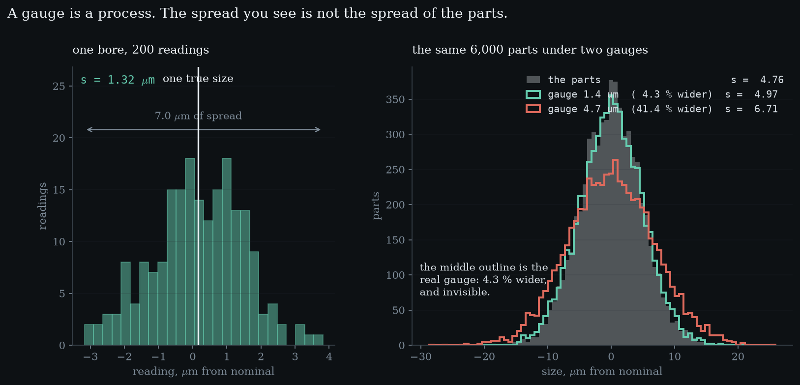
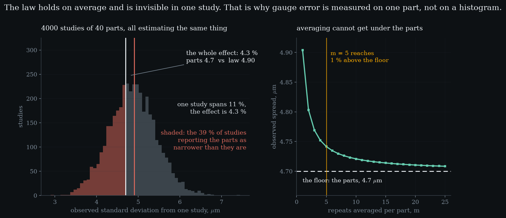

Level 1 · chapter one
Measurement as a process
A gauge is not a window onto the truth. It is a process, it has variation, and the spread you observe is never the spread of the parts. The uncomfortable part is how well that hides.
after nothing — this is where the curriculum starts·leads to Level 2 — repeatability and reproducibility
- 1.1One part is a distributionone bore has one size; two hundred readings have a shape
- 1.2A reading is two thingsthe part, plus whatever the process did on that occasion
- 1.3Variances add, standard deviations do not — cheap at first, brutal later
- 1.4Real, and invisiblethe effect is 4.3 %, one study spans 11 %, and 39 % point the wrong way
- 1.5You cannot measure your way outaveraging divides the gauge term and never touches the parts
One part is a distribution
A bore is machined once. the instanceA bench micrometer on machined bores, microns from nominal. Simulated, seeded, and reproducible by anyone who runs the library.It has one size, and that size does not change while you look at it. Measure it two hundred times and you get two hundred different answers, spread over 7.0 µm.
Nothing about the part accounts for that. one part, many answersreadings200spread of the readings1.32 µmfull range seen7.0 µmThe spread belongs to the measurement, and the moment you accept that it exists you have accepted the sentence this whole curriculum rests on: the gauge is a process, so it has a distribution, so it can be studied with the same arithmetic as any other process.
That is the first minute of the act above. It is worth watching the readings land rather than reading the number: the histogram builds out of nothing while a single bright line marks the one true size that never moves.
A reading is two things
Every reading is the part plus whatever the measurement process did on that occasion. what is left outBias — a gauge that reads high on everything — is Level 5. Here the error averages to zero, so nothing can be blamed on it.Written down, that is unremarkable. Its consequence is not.
If the reading is a sum, the spread of the readings is the spread of a sum. independentIt matters. If the gauge read high on big parts the two terms would be correlated and the arithmetic below would be wrong.And the spread of a sum of two independent things is not the sum of their spreads.

Variances add, standard deviations do not
Independent variation adds in quadrature — the way the sides of a right triangle do. The parts are one leg, the gauge is the other, and what you observe is the hypotenuse.
On this study the parts stand at 4.7 µm and the gauge at 1.4 µm. the quadrature pricegauge as a fraction29.8 %so the spread is wider by4.34 %adding them would claim6.1 µmAdding them would say 6.1. The answer is 4.90 — the gauge is 30 % of the part spread and it costs 4.3 %.
Squaring is what makes measurement error cheap at first and expensive later. what a gauge costsgauge at 10 %0.50 % widergauge at 20 %1.98 % widergauge at 30 %4.40 % widergauge at 50 %11.80 % widergauge at 75 %25.00 % widergauge at 100 %41.42 % widerA small ratio contributes its square, which is smaller still; a ratio near one contributes all of itself.
Read it backwards and it stops being reassuring. the useful directionMost tables answer “what does this gauge cost”. The question an engineer actually has is “how bad may it get”, which is the inverse.To keep the observed spread within one percent of the truth the gauge has to stay under 14 % of the part spread — but a gauge may reach 46 % before the histogram is ten percent too wide. Bad gauges hide in that gap.
Real, and invisible
Here is where this level nearly went wrong. The claim is that the observed spread exceeds the part spread. The seeded forty-part study in the library reports the opposite.
Its observed spread came out at 3.99 µm against a true part spread of 4.7. signal against noisethe effect4.3 %one study's noise11 %studies pointing the wrong way39 %Narrower. The variance law forbids that in expectation, and sampling permits it constantly: at forty parts the sampling error of a standard deviation is about 11 %, and the effect being looked for is 4.3 %.

Roughly 39 % of studies report the parts as narrower than they are. the gateA test asserts the seeded study contradicts the headline. If someone reseeds it to look tidy, that test fails.The reseeding fix was available and it would have been a lie about what a study can do, so the study stayed and a test now pins it.
Averaged over four thousand studies the law returns exactly — and not quite to sigma. a 0.64 % gap that was not erroraveraged over 4000 studies4.8729 µmwhat s estimates4.8727 µmsigma itself4.9041 µmc4 at 40 parts0.99361It returns to , because the sample standard deviation is a biased estimator, low by a factor that depends only on how many observations it had.
That 0.64 % looked like simulation noise and was not. earned it firstc4 is derived from gamma functions here and checked against the printed constants at n = 2, 3, 4, 5, 10 and 25 before anything rests on it.Checking the replication against sigma would have needed a tolerance wider than the whole effect this level teaches, so the check would have passed while the arithmetic was wrong. Against it holds to four figures.
So gauge error is never estimated by comparing histograms. the trustworthy numberwithin-part estimate1.3981 µmits sampling error7.9 %degrees of freedom80It is estimated by measuring one part repeatedly, which has 80 degrees of freedom on the gauge alone and does not depend on the part spread at all.
You cannot measure your way out
The obvious response to a noisy gauge is to measure every part several times and average. It works, and it stops working.
Averaging divides the measurement variance by the number of repeats and does nothing whatever to the variation between the parts. repeats against the floorm = 14.904 µm+4.34 %m = 24.803 µm+2.19 %m = 34.769 µm+1.47 %m = 54.742 µm+0.88 %m = 104.721 µm+0.44 %m = 254.708 µm+0.18 %So the observed spread falls towards 4.7 µm and stops there.
Five repeats reach one percent above the floor. the floorIt is the part-to-part variation. The thing you were trying to see in the first place.Twenty-five barely improve on five, because the improvement goes as one over m inside a square root. There is no number of repeats that measures the parts away.
- observed spread µm
- —
- one reading gives µm
- —
- gauge / parts %
- —
- above the floor %
- —
Drag the gauge to zero and the two curves coincide: what you see is what the parts are. Then raise the repeats — the observed spread falls towards the parts while one reading gives stays exactly where it was, because averaging changes what you record and not what the gauge does. Only the last tile carries a verdict; the rest are quantities, and this level has nothing to fail yet.
Which leaves the question the next level has to answer. the seam aheadRepeatability and reproducibility are two different questions that the plant calls one word.A gauge has a size, and a size is only meaningful against something. This level has been quietly comparing it to the part spread — but the spread of the readings on one part was measured with one operator, on one afternoon. Hand the gauge to somebody else and it is not obvious that the number stays the same.